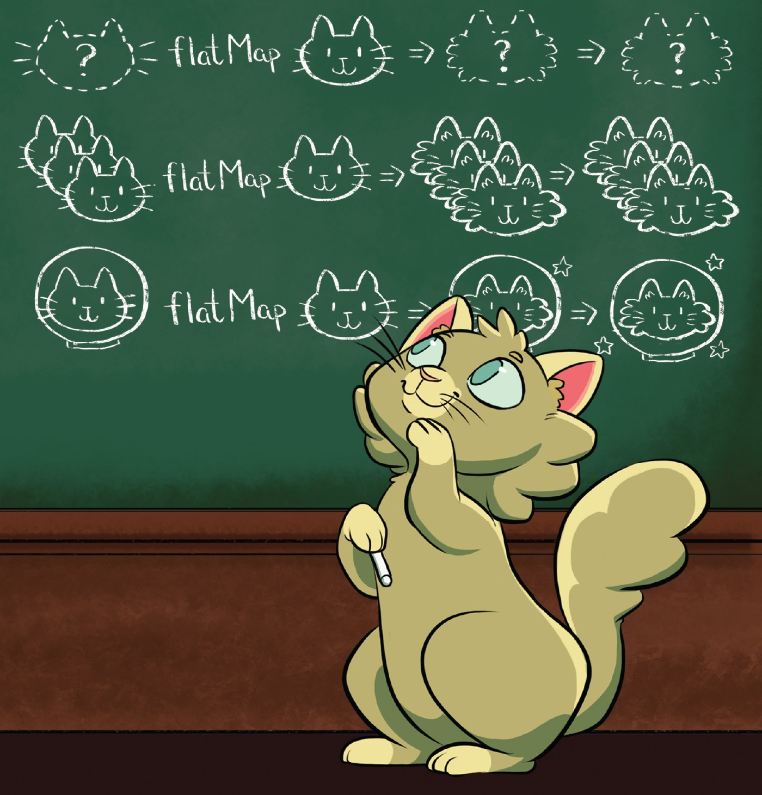

Абстракции от по-висок ред
Абстрактността в математиката
Примери: групи, полета, полиноми, векторни пространства и много други
Алгебрични структури – множества със съответни операции и аксиоми
(свойства)
алгебрични структури ~ тип данни
Група
Нека G е множество с бинарна операция „·“
G наричаме група, ако:
асоциативност – ∀ a, b, c ∈ G:
(a · b) · c = a · (b · c)неутрален елемент – ∃ e ∈ G, такъв че ∀ a ∈
G
e · a = a · e = aобратен елемент – ∀ a ∈ G, ∃ a’ ∈ G, такъв
че
a · a' = a' · a = e
Моноид
Нека M е множество с бинарна операция „·“
M наричаме моноид, ако:
асоциативност – ∀ a, b, c ∈ M:
(a · b) · c = a · (b · c)неутрален елемент – ∃ e ∈ M, такъв че ∀ a ∈ M
e · a = a · e = a
Реализация?
Задача: напишете метод sum работещ със списъци от
различни типове
sum ( List ( 1 , 3 , 4 )) sum ( List ( "a" , "b" , "c" )) sum ( List ( Rational ( 1 , 2 ), Rational ( 3 , 4 )))
Контекст в програмния код
в математиката: „Нека фиксираме поле F, такова че…“
в математиката: „Нека фиксираме ортогонална координатна система“
context
The parts of a written or spoken statement that precede or follow a
specific word or passage, usually influencing its meaning or effect;
The set of circumstances or facts that surround a particular event,
statement, idea, etc.
“What comes with the text, but is not in the text.”
Примери
Текуща:
конфигурация
транзакция
сесия
ExecutionContext – pool от нишки
…
Контекст в програмния код
import
подтипов полиморфизъм
dependency injection
външен scope
параметри
Експлицитно предаване на контекст
Имплицитно предаване на контекст
В математиката: „Дадено е поле F, такова че…“
В Scala 3:
given f: Field [ Double ] = ???
Context bound
def sum[ A : Monoid]( xs: List [ A])
Логическо програмиране
Типовата система е напълно логическа
Търсенето на given стойности от определен тип
съвпада с механиката на логическите изводи, позната ни от логическото
програмиране
При изводите given без параметри
съответства на логически факти, а given с параметри на
логически правила
Type class-овете дефинират операции и аксиоми/свойства, които даден
тип трябва да притежава.
За да бъде един тип от даден клас, то трябва да предоставим валидна
имплементация на операциите на type class-а
Аксиомите са важни
((a · b) · c) · d – едно по едно, от ляво надясно
(a · b) · (c · d) – балансирано и паралелизуемо
Могат да бъдат проверявани чрез тестове
fold vs foldLeft( 1 to 100000000 ). par. fold ( 0 )( _ + _)
fold изисква асоциативна операция
ООП класове срещу type class-ове
Класовете в ООП моделират обекти
Type class-овете моделират типове
Полиморфизъм
Използването на един и същи интерфейс с различни типове
Параметричен полиморфизъм (generics)
def mapTwice[ A]( xs: List [ A])( f: A => A): List [ A] = . map ( f compose f) mapTwice ( List ( 1 , 2 , 3 ))( _ * 2 ) // List(4, 8, 12) mapTwice ( List ( "ab" , "c" , "def" ))( str => str + str) // List(abababab, cccc, defdefdefdef)
Ad hoc полиморфизъм
Избор на конкретна имплементация според конкретния тип
Ad hoc полиморфизъм – overloading
def stringify ( n: Int ) = n. toStringdef stringify ( n: Rational) = s"$n .numer/ $n .denom " stringify ( 1 ) // "1" stringify ( Rational ( 1 )) // "1/1"
Ad hoc полиморфизъм – type classes
Пример: реализацията на Monoid се избира конкретно
според типа
sum ( List ( Rational ( 2 ), Rational ( 4 ))) // rationalMonoid sum ( List ( 2 , 4 )) // intMonoid
Подтипов полиморфизъм
trait Figure: def area: Double def circumference: Double case class Circle ( radius: Double ) extends Figure: def area: Double = Pi * radius * radiusdef circumference: Double = 2 * Pi * radiuscase class Square ( side: Double ) extends Figure: def area: Double = side * sidedef circumference: Double = 4 * sideval figure = getRandomFigure ( 10 ) . area // 100
Липсва информация за конкретния тип, но се изпълнява конкретна
имплементация
Duck typing и структурно подтипизиране
type Closable = { def close (): Unit } def handle[ A <: Closable, B]( resource: A)( f: A => B): B = try f ( resource) finally resource. close () handle ( new FileReader ( "file.txt" ))( f => readLines ( f))
Binding
Static (compile time) – параметричен и ad-hoc полиморфизъм
Late (runtime) – подтипов полиморфизъм и duck typing/структурно
типизиране
Late binding-а е фундаментален за ООП
Ретроактивност
разширяване на тип без промяна на кода му
Ретроактивен полиморфизъм
добавяне на интерфейс към тип
Type class-овете поддържат ретроактивен полиморфизъм
Сериализация до JSON
По-късно в курса ще разгледаме библиотеката Circe
Езици, поддържащи type class-ове
Haskell
Scala
Rust
Idris
…
В Haskell всеки type class може да има
В Scala липсва такова ограничение, което е едновременно и плюс и
минус.
Библиотеки за type class-ове?

Библиотеки
Общи
В конкретен домейн
Spire –
математически абстракции, използва CatsCats
Effects – абстракции за асинхронност…
Cats
Различни видове котк… категории 😸
Vivian – Scala Magician
Multiversal equality в Cats (Eq)
В заключение
Type class-овете:
моделират типове
предоставят общ интерфейс и аксиоми за цяло
множество от типове
или още – общ език, чрез който да мислим и боравим
с тези типове
позволяват ad hoc полиморфизъм
наблягат на композитността и декларативността
добавят се ретроактивно към типовете и в Scala
могат да бъдат контекстно-зависими